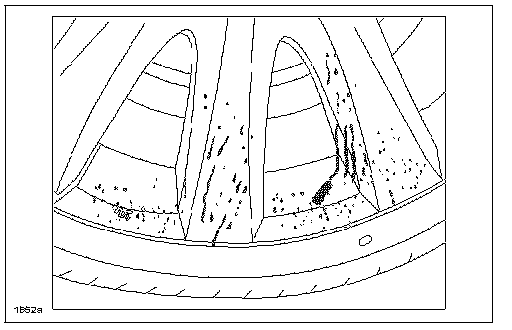

Wheels - Stain Prevention Information
TSB: 02-006/07ALL MODELS - STAINS APPEAR ON WHEELS
APPLICABLE MODEL(S)VINS
All Models (Except B-Series and Tribute)
DESCRIPTION

Some automotive cleaning products contain strong acid or alkali. When these types of cleaners are used to clean the wheels on Mazda vehicles, the chemicals contents penetrate the clear coating of the wheel surface and damage the paint under the clear coating. The damaged area has the appearance of dark stains.
Use extra care when cleaning wheels. The following are guidelines to follow when cleaning the wheels.
^ Mazda recommends using a mild soap or neutral detergent as stated in the owners manual under Appearance Care in the Maintenance and Care section.
^ DO NOT use a cleaning products containing strong acid or alkali contents to clean the wheels.
^ DO NOT apply any type of specialized wheel cleaner to the wheels when they are hot (such as after driving the vehicle or if the vehicle has sat in the sun). Ensure wheel temperatures are the same as ambient temperature before cleaning.
^ Within 15 minutes after any cleaner is applied, rinse the wheel thoroughly to completely remove the cleaner.
^ Stains on Mazda Wheels caused by improper cleaning are not covered under the Mazda Vehicle Warranty.

Disclaimer